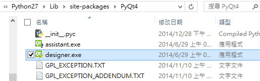
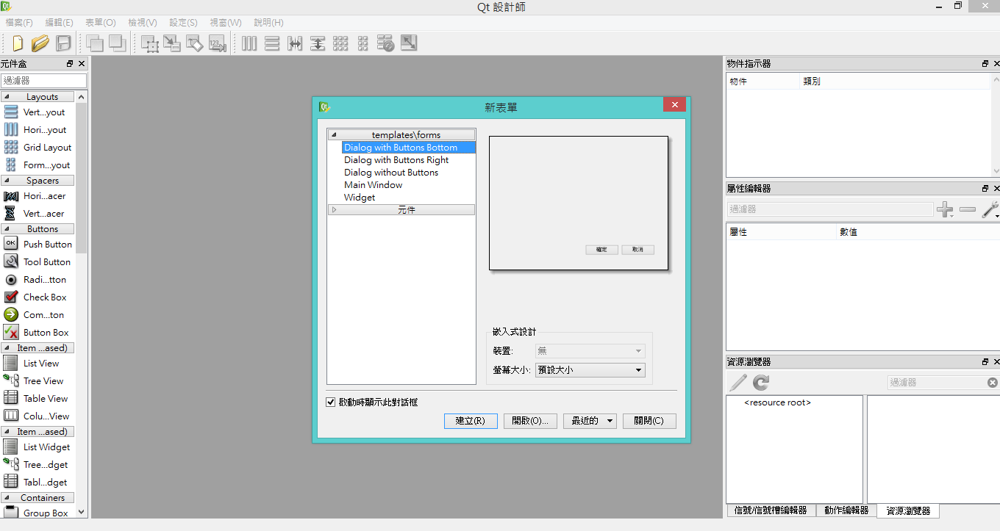

Python - 在 Windows 上使用 PyQt 開發 Python 視窗程式
Posted on Mon 05 January 2015 in Python
而其中由於 Qt 的資源很多，也是可以跨平台開發與使用，而 在 Python 上開發 Qt 則有 PyQt 可以選擇，如果有商業用途，則可以選擇 PySide －提供和 PyQt 類似的功能，並相容 API。但與 PyQt 不同處為使用 LGPL 授權，所以可以作為商業用途的軟體引用開發。
而本文即是使用 PyQt 作為 GUI 的開發。
前言
Python 上最常用來開發 GUI 視窗的有 thinker、PyGTK、wxPython 與 PyQt / PySide 等等。
而其中由於 Qt 的資源很多，也是可以跨平台開發與使用，而 在 Python 上開發 Qt 則有 PyQt 可以選擇，如果有商業用途，則可以選擇 PySide －提供和 PyQt 類似的功能，並相容 API。但與 PyQt 不同處為使用 LGPL 授權，所以可以作為商業用途的軟體引用開發。
而本文即是使用 PyQt 作為 GUI 的開發。
ㄧ、安裝 PyQt
對照安裝好的 Python 版本是 2.7 還是 3.3 與位元版本 選擇對應的 PyQt，這邊我的環境是 Python 2.7.9 32bit，所以選擇 PyQt4 的 PyQt4-4.11.3-gpl-Py2.7-Qt4.8.6-x32，此安裝檔內已經包含 SIP 與 Qt4.8.6，所以事先不需要安裝 SIP 與 Qt
安裝完後，預設會自動在系統環境變數中加入 PyQt 的路徑:
C:\Python27\Lib\site-packages\PyQt4

二、使用 Qt 的 .ui 檔做 UI 設計
如果要開發給 Python 用的 UI 檔案，可以使用 Qt Creator 來設計 UI，在 PyQt 中會提供 designer.exe 這個程式，該程式是 Qt 的一部分，一起提供進來方便做 UI 的開發，如下兩圖：


三、轉換 .ui 檔為 .py 檔作為 module 使用
產生完後的 .ui 檔，PyQt 還提供一個 Command 指令可以把 ui 檔案轉換成 .py 檔，方便我們直接在 Python 中調用。使用 CMD 切換到設計好的 ui 所在目錄下，執行此指令：
pyuic4 your_qt_ui.ui -o output_name.py
即可產生出 py 檔，pyuic4 是 PyQt 預設代的指令，此檔案的路徑在 C:\Python27\Lib\site-packages\PyQt4 中，為一個 .bat 檔案，但是實際調用的是 C:\Python27\Lib\site-packages\PyQt4\uic\ 下的 pyuic.py 檔案。
載入 UI 的範例
這邊我把原先的 .ui 檔案名稱改為 fmwp_mainwindow.ui，產生完的名稱是 fmwp_mainwindow.py，這邊我的主要 Script 檔案為 FMWPModel.py
於是在 FMWPModel.py 中一開始使用 fmwp_mainwindow.py 的程式如下：
import fmwp_mainwindow
from fmwp_mainwindow import Ui_MainWindow
from PyQt4.QtGui import QMainWindow
class MainWindow(QMainWindow, Ui_MainWindow):
def __init__(self, parent=None):
super(MainWindow, self).__init__(parent)
self.setupUi(self)
if __name__ == "__main__":
app = fmwp_mainwindow.QtGui.QApplication(sys.argv)
window = MainWindow()
window.show()
sys.exit(app.exec_())
如此即可完成，再執行 FMWPModel.py 就會顯示 GUI 視窗了！